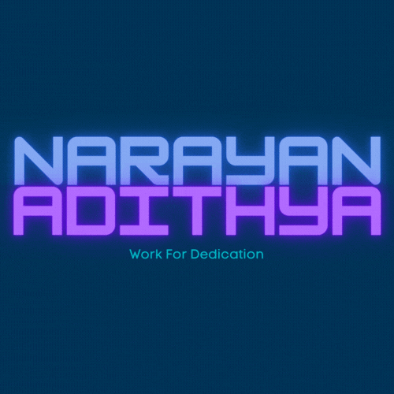

Hola, I'm Adithya
Every Day is an Exam , Be prepared everyday ~ Me
Believe it or not but I am the most meticulous and overstressed person you have met in a while. I like to consider these qualities of mine what makes me so special. I'm a second year B.Tech student and a mentor to my close friends. I'm the type of guy who finds a thing really interesting learns it partly and then leaves it and I believe most of us are configured that way. However my current interest is into Data Visualization and Analytics and I am trying to find if this is the field for me.
Professional Bio
I am from Kozhikode, Kerala. I did my studies till 12th in Devagiri CMI Public School and my UG in Vellore Institute of Technology Vellore. In the many domains I have explored I have gained experience in Frontend development, Backend Development and basic ML and AI. I pride myself in my flexibility of using C++ and Python. I have done numerous projects which are mainly aimed at integrating ML models into a website. I have also worked on content creation for a Instagram channel which was later abandoned. Apart from this I am the General Secretary of Soft Computing Research Society in my university and my achievements include bagging the first prize for a project of mine titled CELIS , which you can check out on my GitHub account (Link in the footer).
Below are the major projects I have worked on, Feel free to take inspiration from them if you feel so
1.CELIS
DESCRIPTION: CELIS is a website that acts as an central platform that connects to various other educational platforms like Coursera, Udemy etc. The website is aimed at finding the right course for a person in the most optimized manner. This is a group project and I worked on the Backend using Python-Flask and integrated the Recommender System into the final website deployed on Heroku.
2.Elevate
DESCRIPTION: This is an ongoing project and involves use of 3 AI models inorder to detect depression using the DAIC-WOZ dataset. More information will be disclosed soon.
3. Minor Projects
- Gantt-Chart-Renderer, A free interactive plotly chart rendered
- Youtube Comment Spam Detector
- Facial Expression Recognition App Using Flask, Keras Integration
- Simple Real Time Chat Application using Flask-Socketio
Here are some of my Interests and Content I have Developed
My Signature Trademark Ultra Max Pro Logo
My Quote

Tech I am Familiar With: